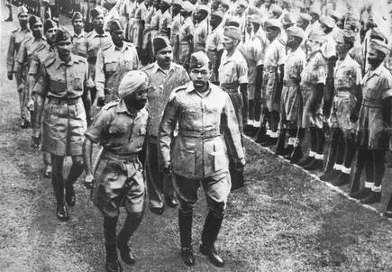

INDIAN ARMY
ESTABLISHMENT
The Indian National Army ( Azad Hind Fauj : Free Indian Army) was an armed force formed by Indian nationalists in 1942 in Southeast Asia during World War II. Its aim was to secure Indian independence from British rule. It formed an alliance with Imperial Japan in the latter's campaign in the Southeast Asian theatre of WWII.[1] The army was first formed in 1942 under Mohan Singh, by Indian PoWs of the British-Indian Army captured by Japan in the Malayan campaign and at Singapore.